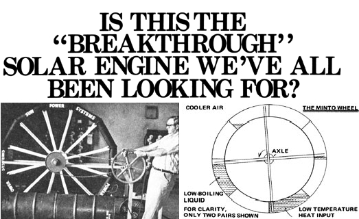

Hold on to your hat! Because if Wallace Minto has done what we think he's done . . . the backyard solar engine that can make everyone as energy self-sufficient as he or she wants to be has just been invented!
And it's so simple! Minto's new engine is nothing but a big vertical wheel with a rim made of a series of sealed "drums". Sealed, that is, except for a connecting pipe that runs from each separate container to its diametrically opposed partner on the opposite side of the wheel. One of the barrels in each set is filled with propane, Freon, or any other liquid that has a very low boiling point. And the whole wheel is then positioned so that its bottom edge can be heated a few degrees warmer than its top two-thirds or three-quarters. In essence, that's it!
And here's how the Minto Wheel operates: As the Freon or propane in the drum on the bottom of the rim is warmed, it begins to vaporize and push against the surface of the remaining liquid in the container. This push forces most of the fluid up the connecting tube until it cascades into the barrel on the top of the wheel's rim. As a result, of course, the bottom drum becomes increasingly lighter as the top one becomes increasingly heavy . . . and gravity then causes the whole assembly to revolve around its horizontal axis. And-son of a gun!-when that filled drum from the top reaches the bottom and is warmed a few degrees . . . danged if the entire action isn't repeated all over again.
What we have here, you see, is a waterwheel that doesn't need to be pushed by a mountain stream. Just fill it once with a low-boiling-point liquid, and forget it. As long as you can then maintain a temperature difference between the top and the bottom of the wheel (with, as explained, the bottom being kept warmer than the top), your "engine"-with a little shot of grease now and then-should run dang near indefinitely.
Yes, but will that engine do useful work? Minto says it will. "Take a wheel that's 40 feet in diameter. Put 14 pairs of containers, each of which has a volume of 3.415 cubic feet, around its rim. Fill the cylinders with propane and hold the cool drum in each set at 100° F while the warmer barrel is heated to 103.5°. At 1 rpm, the engine will produce 3.19 horsepower. Furthermore, if you use Freon R-12 instead of propane and increase your temperature gradient to 12 degrees, the output will go up to 8.69 hp."
Now stop and think about that for a minute. Just envision what you could do out there on the ole homestead (or even in the suburbs) if you had a steady 24-hour-a-day source of eight horsepower to tap any time you wanted to. Think of the grain mills and shop equipment and composting cutter-chippers and water pumps and electrical generators you could run . . . not all at once, to be sure, but one or two or three at a time.
Sure, you'll have to step that 1 rpm up through pulleys and/or a gearbox to the kinds of speeds that today's appliances and tools need for their proper operation. But that's no big deal. It's all been done before with real waterwheels. There's no new technology involved on that end of the Minto Wheel at all.
In fact, there's no real new technology involved in any part of this new engine. Just a simple rearranging of principles and materials that have been commonly available for decades. And that's the genius of the whole thing. The genius of Wallace Minto.
But can this actually be? Has Minto really come up with an unsophisticated, build-it-in-your-backyard, maintenance-free, lifetime "engine" that anyone can set up and operate for scores of years on nothing but sunshine, the heat from a small wood fire, or * . . or . . . or the warmth of a good-sized compost pile? Can this really be? It sounds too good to be true. But Minto says that it is true and, by the time this issue reaches you, he expects to have plans available for the construction of a 13-foot wheel of his design. (Plans, by the way, which can be scaled up to any size you might desire.)
Well, we haven't yet seen the prototype Minto Wheel ourselves so we can't vouch for its operation . . . but we have no reason to doubt Mr. Minto (who, as you may recall, developed an operational Freon automobile engine a few years ago) when he states what his wheel will do. So, until we find out that it won't work, we thought you should know that those plans are available for $10.00 a set from Sun Power Systems, Inc., 1121 Lewis Avenue, Sarasota, Florida 33577. Lot us know how your wheel comes out!
|
 |
|
|